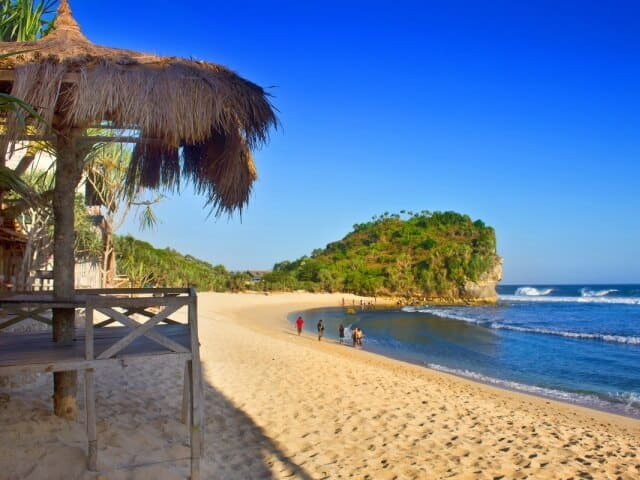
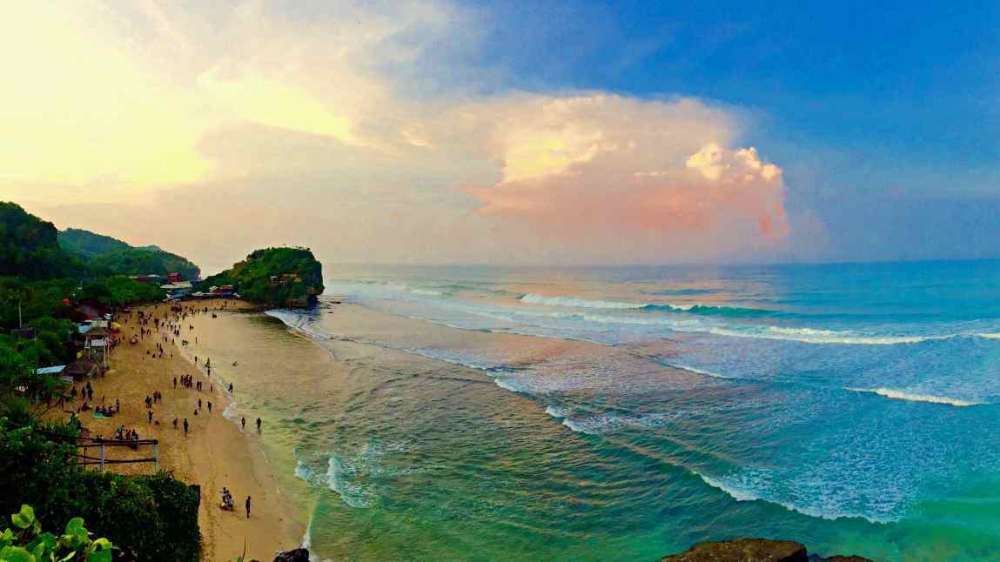
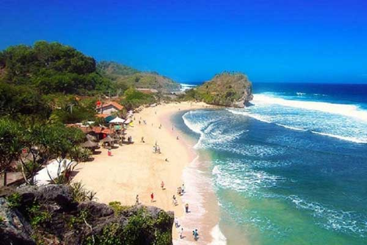

Tentang Pantai Indrayanti
Pantai Indrayanti merupakan permata tersembunyi yang kini menjelma menjadi destinasi wisata bahari paling ikonik di jajaran pesisir selatan Kabupaten Gunung Kidul, Yogyakarta. Berbeda dengan pandangan umum tentang pantai selatan yang mistis atau berbatu tajam, pantai ini justru menawarkan lanskap yang sangat ramah bagi pelancong.
Dikenal karena hamparan pasir putihnya yang begitu lembut, bentang alam pantai ini dibingkai megah oleh bukit-bukit karang tua di sisi barat dan timurnya. Air lautnya yang berwarna biru gradasi toska menyuguhkan pemandangan jernih yang memanjakan mata, menjadikannya magnet utama bagi wisatawan domestik maupun mancanegara yang berkunjung ke Daerah Istimewa Yogyakarta.
Sejarah & Misteri Nama
Ada fakta unik di balik penamaan tempat ini. Pemerintah daerah dan kraton Yogyakarta sebenarnya secara resmi mendaftarkan kawasan ini dengan nama Pantai Pulang Syawal. Namun, di tengah masyarakat dan wisatawan, nama "Indrayanti" jauh lebih melekat erat.
Sejarah nama Indrayanti diambil dari papan nama sebuah restoran dan cafe lokal milik pasangan suami-istri bernama Bapak Indra dan Ibu Yanti yang beroperasi di dekat pantai saat pariwisata daerah tersebut mulai menggeliat. Karena restoran tersebut menyajikan layanan yang ramah dan menjadi satu-satunya penanda mencolok di masa lalu, orang-orang mulai menyebut area di sekitarnya sebagai "Pantai Indrayanti" hingga menjadi viral secara turun-temurun.
Rute & Lokasi Geografis
Secara administratif, objek wisata ini terletak di Dusun Ngandong, Desa Sidoharjo, Kecamatan Tepus, Kabupaten Gunung Kidul, Daerah Istimewa Yogyakarta.
Jika Anda berangkat dari pusat Kota Yogyakarta atau kawasan Malioboro, jarak tempuh yang harus dilalui adalah sekitar 65 hingga 70 kilometer. Perjalanan memakan waktu kurang lebih 1,5 hingga 2 jam berkendara tergantung pada kondisi lalu lintas. Jalur utama yang bisa ditempuh melintasi rute Kota Yogyakarta menuju Jalan Wonosari, melewati Bukit Bintang, alun-alun Wonosari, hingga mengambil arah selatan menuju Tepus.
Pesona & Daya Tarik Utama
Banyak hal yang membuat wisatawan betah berlama-lama menghabiskan waktu di pantai ini, di antaranya adalah:
- Kebersihan yang Terjaga Ketat: Pengelola menerapkan denda bagi siapa saja yang membuang sampah sembarangan. Hal ini membuat pesisir pantai bersih berkilau.
- Tebing Karang Eksotis: Pengunjung dapat mendaki bukit karang di sebelah timur untuk melihat panorama luas Samudra Hindia dari ketinggian.
- Cakrawala Sunset: Menjelang sore hari, langit berganti warna menjadi jingga keemasan, menawarkan momen matahari terbenam yang sangat romantis dan estetik.
- Wahana Bermain: Tersedia penyewaan payung pantai yang besar untuk bersantai, serta sewa motor ATV dan Jet Ski untuk menantang adrenalin.
Fasilitas Lengkap Wisata
Sebagai salah satu pantai yang dikelola secara modern, fasilitas pendukung di sini tergolong yang paling lengkap:
- Akomodasi Penginapan: Mulai dari cottage kayu bernuansa alam hingga hotel modern menghadap langsung ke arah deburan ombak pantai.
- Kuliner Seafood: Berjajar restoran yang menyajikan hidangan laut segar (ikan bakar, kepiting, cumi) dengan bumbu khas Jawa yang memanjakan lidah.
- Kenyamanan Publik: Area parkir luas untuk bus pariwisata, jejeran toilet bersih, mushola, serta toko suvenir kerajinan lokal.
- Lifeguard: Adanya pengawasan tim SAR pantai secara berkala guna memastikan keselamatan para perenang.
Galeri Foto Keindahan



Navigasi Google Maps
Kesimpulan Perjalanan
Pantai Indrayanti bukan sekadar tempat singgah biasa, melainkan sebuah paket wisata pantai yang komplit di Yogyakarta. Pantai ini sangat direkomendasikan untuk liburan keluarga, perjalanan romantis, maupun petualangan fotografi bersama teman-teman.
Akses jalan yang mulus, kebersihan lingkungan yang sangat terjaga, serta tersedianya fasilitas penunjang yang serba ada menjadikannya destinasi wajib minimal sekali seumur hidup saat Anda menapakkan kaki di bumi Handayani, Gunung Kidul.